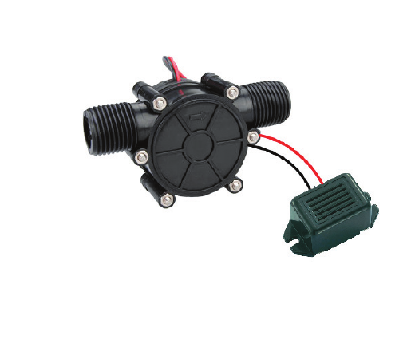

طاقة المياه
هي الطاقة المستمدة من جريان المياه؛ إذ تحوّل العنفات أو التوربينات المائية طاقة المياه إلى طاقة كهربائية.
نستقصي كيف يحوّل التوربين المائي طاقة المياه إلى طاقة كهربائية، ثم نختبر أثر كمية المياه وارتفاع سقوطها في مقدار الطاقة الناتجة.
المفاهيم الأساسية
هي الطاقة المستمدة من جريان المياه؛ إذ تحوّل العنفات أو التوربينات المائية طاقة المياه إلى طاقة كهربائية.
آلة دوّارة تحوّل الطاقة الحركية والطاقة الكامنة للمياه إلى طاقة حركية دورانية.
كلما زاد تدفّق المياه المارة في التوربين زادت الطاقة التي يمكن إنتاجها، مع ثبات بقية العوامل.
كلما زاد فرق الارتفاع بين مصدر الماء والتوربين زادت الطاقة الكامنة المتاحة للتحويل.
الخلاصة: تعتمد كمية الطاقة المنتجة أساسًا على كمية المياه المارة وارتفاع سقوطها.
تسلسل التحوّل
ينهمر الماء من مكان مرتفع ليدير التوربين.
يدور التوربين فيدير المولد الكهربائي المتصل به.
ينتج المولد الكهربائي طاقة كهربائية.
التجربة العملية
تنبيه للسلامة: استخدم جهدًا منخفضًا ونفّذ النشاط بإشراف المعلم. أبقِ الماء بعيدًا عن التوصيلات وجهاز DMM، وجفّف يديك قبل لمس عناصر الدارة.
غيّر قوة تيار الماء فقط في المحاولات الثلاث الأولى، وثبّت ارتفاع السقوط وبقية عناصر الدارة لتحصل على مقارنة عادلة.
| الحالة | الحمل | ارتفاع السقوط | فرق الجهد V | شدة التيار I | الملاحظة |
|---|---|---|---|---|---|
| تيار مائي ضعيف | جرس | ||||
| تيار مائي متوسط | جرس | ||||
| تيار مائي قوي | جرس | ||||
| تيار مائي مناسب | مصباح 12V |
جرّب بنفسك
غيّر معدل تدفق المياه وارتفاع سقوطها، واختر الجرس أو المصباح، ثم اضغط تشغيل التجربة. تثبّت المحاكاة كثافة الماء والجاذبية وكفاءة النظام، ولذلك يكون مؤشر الإنتاج النسبي متناسبًا مع التدفق × الارتفاع. القيم المعروضة تعليمية تقريبية وليست قياسات مخبرية.
تجارب جاهزة
اضبط القيم ثم شغّل التجربة.
سجّل وقارن
| المحاولة | التدفق | الارتفاع | الحمل | الإنتاج النسبي | سرعة التوربين | جهد المصدر | تيار المصدر |
|---|---|---|---|---|---|---|---|
| لم تُسجَّل نتائج بعد. | |||||||
مقارنة
يُقصد بعبارة «الطاقة المؤقتة» المصادر غير المتجددة القابلة للنفاد، وبعبارة «الطاقة النظيفة الدائمة» المصادر المتجددة؛ وهذه هي المصطلحات العلمية الأدق للمقارنة.
| وجه المقارنة | مصادر غير متجددة | مصادر متجددة ونظيفة |
|---|---|---|
| الاستمرار | محدودة وقابلة للنفاد. | تتجدد طبيعيًا ما دام المصدر متاحًا. |
| الأثر البيئي | تسبب تلوثًا وانبعاثات أكبر غالبًا. | أثرها البيئي أقل غالبًا، لكنها ليست بلا أثر. |
| أمثلة | النفط والفحم والغاز الطبيعي. | المياه والشمس والرياح. |
ملاحظة: الطاقة المائية متجددة ومنخفضة الانبعاثات أثناء التشغيل، لكن إنشاء السدود قد يؤثر في الأنهار والكائنات الحية؛ لذلك يلزم التخطيط البيئي الجيد.
فكّر في بيئتنا
لأن وادي غزة غير دائم الجريان، فلا يوفّر تدفقًا مائيًا ثابتًا يمكن الاعتماد عليه طوال الوقت لتشغيل التوربين.
أفكّر ثم أتحقّق
فكّر في الإجابة أولًا، ثم اضغط «إظهار الإجابة» وقارنها بإجابتك. عبّر بكلماتك مع الحفاظ على المعنى العلمي.
إجابة نموذجية
يحوّل التوربين طاقة الماء إلى حركة دورانية. ويحوّل المولّد هذه الحركة إلى طاقة كهربائية لتشغيل حمل مثل المصباح أو الجرس.
إجابة نموذجية
طاقة وضع للماء المرتفع، ثم طاقة حركة للماء المتدفق، ثم حركة دورانية للتوربين والمولّد، ثم طاقة كهربائية، وأخيرًا ضوء وحرارة في المصباح.
النتيجة المتوقعة وتفسيرها
تزداد القدرة المتاحة للتوربين، ويزداد الإنتاج الكهربائي عادةً خلال الزمن نفسه، إذا بقيت بقية الظروف ثابتة وكان النظام ضمن مجال تشغيله. السبب أن كمية أكبر من الماء تمر كل ثانية. قارن التوقع بنتائجك.
النتيجة المتوقعة وتفسيرها
تزداد طاقة الوضع المتاحة لكل كمية من الماء، فتزداد القدرة التي يمكن تحويلها إلى كهرباء عادةً مع ثبات كفاءة النظام وضمن مجال تشغيله. وقد تتأثر التجربة العملية بفواقد الجريان.
مراجعة ختامية للدرس الأول
فكّر في الإجابة أولًا، ثم اضغط «إظهار الإجابة» وقارنها بإجابتك. عبّر بكلماتك مع الحفاظ على المعنى العلمي.
إجابة تربط الأفكار
في الرياح والمياه تدير حركة المائع عنفة متصلة بمولّد. أما الخلية الشمسية فتحوّل طاقة الضوء مباشرة إلى كهرباء من دون عنفة أو مولّد دوّار.
مثال لإجابة ممكنة
يمكن اختيار خلايا شمسية لأن الضوء متاح، بينما لا تتوافر مياه جارية لتشغيل توربين مائي. نراعي حاجة الجهاز للكهرباء وأوقات تشغيله وظلال الموقع قبل تحديد النظام. تُقبل بدائل مبررة بظروف المكان.
إجابة تربط الأفكار
لا يعمل الجهاز من دون مصدر للطاقة: حركة الهواء للعنفة، والضوء للخلية، وطاقة الماء للتوربين. تحوّل هذه الأجهزة الطاقة إلى كهرباء ثم إلى حركة أو ضوء أو صوت، ويتبدد جزء منها في صورة حرارة.
لخّص عمل مجموعتك وفق عناصر التقرير المطلوبة.
المواد المساندة
التوربين المائي والجرس الكهربائي المستخدمان في النشاط.

شرائح تمهيدية حول مصادر الطاقة النظيفة والمتجددة.
اطبع الصفحة بعد تسجيل القياسات والنتائج للاحتفاظ بتقرير النشاط.
بُنيت خطوات التجربة والسؤال الختامي على نشاط ٤:١:١ في الصفحة ٥ من كتاب التكنولوجيا المرفق. أضيفت التعريفات وتسلسل التحولات وعامل الارتفاع وسؤال وادي غزة للتوضيح والإثراء. المحاكاة نموذج تعليمي للمقارنة وليست جهاز قياس مخبريًا.